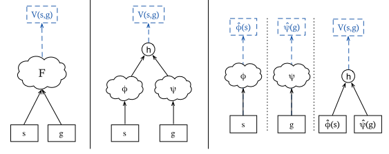
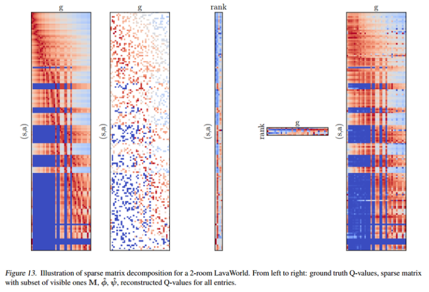
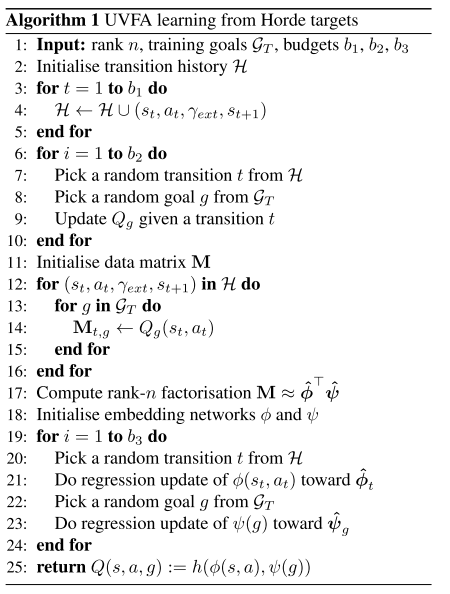
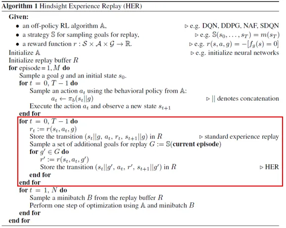
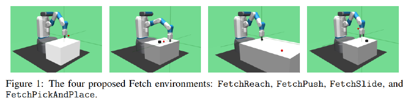

传统的强化学习算法都局限在单个目标上，训练好的算法难以完成这个目标外的其他目标。以机械臂操作为例，采用单一策略只能训练抓取同一个位置的物体。对于不同的目标位置，要训练多个策略。另外这类环境通常依赖于人工进行奖励塑形，而设计一个好的奖励函数通常很困难。因此最近的研究更希望使用稀疏的奖励，只有当成功完成任务后才能够获得奖励，在其他的时刻将不会得到奖励。然而智能体在探索过程中，大部分时间内都无法完成任务，导致有价值的样本数目非常少，智能体需要更多的时间进行探索，导致指数级的样本复杂度。
Universal Value Function Approximators #
值函数 $V(s)$ 用于表示状态 s 在实现 agent 总体目标或奖励函数时的效果。从定义来说，值函数量化了某个策略积累某种报酬的能力。从另一个角度思考，值函数量化了一个agent完成某个任务的能力。（摘录自UVFA, HER and Inverse RL）
在一个环境中，任务（目标）可能是不同的，这需要不同的最优值函数去量化完成不同任务的方案。本文提出了一种单个、一致的值函数逼近器 UVFA，在原始的值函数 $V(s)$、$Q(s,a)$ 的基础上增加 goal 作为输入，变成 $V(s,g)$、$Q(s,a,g)$，这样值函数就变成在某一状态（或状态-动作）某一目标下的价值。
另外，本文将目标定义成了最简单的一种情况：$\mathcal{G} ⊆ \mathcal{S}$，当状态达到目标时获得一个二进制的奖励 1。

一般来说，智能体只会看到状态和目标（s，g）的可能组合的一小部分。为了使智能体能够概括到其余组合，上图给出了两种实现 UVFA 的网络结构。
- Concatenated 结构. 直接连接 state 和 goal 作为联合输入，可以用 MLP 实现输出到回归目标的映射；
- Two-Stream 结构. 分别将状态 s 和目标 g 输入到各自的网络，映射到 n 维嵌入向量空间，得到对应的两个 embedding vectors，通过某种函数 h 映射成一个标量作为回归输出，文中采用的方法是向量内积。
监督学习 #
对于 Two-Stream 结构，UVFA的训练包括两个步骤：
- 、通过某种方法获取各个状态目标对应的价值（文中直接给定），然后引入了一种新的因子分解方法——低秩矩阵分解，将回归分解为两个阶段:
- 第一阶段，我们将数据视为一个稀疏的值表，每个观察到的状态 s 对应一行，每个观察到的目标 g 对应一列，并将表分解为状态嵌入 $φ(s)$ 和目标嵌入 $φ(g)$ ，将 $φ(s)$ 表示为 $s$ 行的目标嵌入向量，将 $φ(g)$ 表示为 $g$ 列的目标嵌入向量。
- 第二阶段，分别使用标准回归技术（例如梯度下降）学习从状态 $s$ 到状态嵌入 $φ(s)$ 以及从目标 $g$ 到目标嵌入 $φ(g)$ 的非线性映射。
- 将两个嵌入向量通过向量内积整合成一个状态目标值。

强化学习 #
对于强化学习，文中提供了两种直接从奖励中学习 UVFA 的算法。
第一种算法使用一种 Horde of demons 的方式，可以产生不同目标对应的状态目标值，并使用这些值来 seed the table，然后通过低秩分解的方式将其分解为状态对应的嵌入变量和目标对应的嵌入隐变量，从而学习 UVFA $V(s，g; θ)$，该 $V(s，g; θ)$ 能够概括到以前看不见的目标。

第二种算法采用了自举（bootstrapping）的思想，直接从后续状态的 UVFA 值进行更新： $$ Q(s_t, a_t, g) ← α(rg + γ_g \underset{a’}{max} Q(s_{t+1}, a’, g))+(1 − α)Q(s_t, a_t, g) $$
总结 #
(摘录自分层强化学习survey)
本文提出的统一值函数概念具有迁移意义，同时属于goal-reach范畴，但局限是文中提到比较困难的仍是goal如何选取，但本文并不打算讨论这个问题，因为本文的重点是提供这种考虑目标在内的广义值函数的概念，于是只是简单地选择某些state作为goal，可见goal如何合理选取将是这类分层问题的最大困难。
另一篇写的非常详细的博客：对Reinforcement Learning中的小无相功和九阳神功的一些参悟
Hindsight Explerience Replay（HER) #
HER 是建立在 UVFA 基础上的，原理是回放每个具有任意目标的轨迹。当智能体在一个回合中没有达成目标时，可以使用另外的目标来替代原来的目标，之后根据这个新的目标重新计算奖励，来为智能体提供经验。HER 改善了稀疏奖励下 DRL 的采样效率，可以将该方法与任意的 off-policy 算法结合。
具体地，在 HER 方法下的马尔可夫决策过程表述为一个五元组，其中的状态 $S$ 不仅包含观测 $S_o$，还包括一个期望目标 $S_{dg}$， 且 $S_{dg} \in S_o$。
实现过程 #
实现 HER 算法的关键是构建 replay buffer，包含以下两步：
- 初始化一个固定长度的队列，每次进入一个五元组 $(s_t,a_t,r_t,s_{t+1},g)$，定义初始状态 $s_0$ 和目标 $g$, 智能体根据当前状态 $s_t$ 和目标 $g$ 来采取动作。 奖励的计算如下：
$$ r_t \gets r(a_t,s_t||g) $$
采样出的 $(s_t,a_t,r_t,s_{t+1},g)$ 将被存放到 replay buffer 中。之后，每次都会基于实际目标 $g$ 采样一段完整的智能体经验序列。 2. 使用新的目标 $g’$ 重新计算奖励：
$$ r’ \gets r(a_t,s_t||g’) $$
我们构建新的 transitions $(s_t, a_t, r′, s_{t+1}, g′)$ ，也存放到 replay buffer 中。

文章给出了四种方法去重新获得新的目标 g':
- final: 将每个回合最后的状态作为新目标
- future（效果最好）: 随机选择 k 个在这个轨迹上并且在当前transition之后的状态作为新目标
- episode: 每次选择 k 个在这个轨迹上的状态作为新目标
- random: 每次在所有出现过的状态里面选择 k 个状态作为新目标
一般我们使用 future 方法，因为它能够更好地利用经验。
局限性-INNR问题 #
（这里引用[4]中的文字）。
HER 方法可以通过目标重标记策略，产生足够数量的非负奖励样本，即使智能体实际上没有完成任务。然而，在具有稀疏奖励的复杂顺序物体操作任务中(智能体必须按顺序成功完成每个子任务，以达到期望的最终目标)，由于隐含的 一致非负奖励（Identical Non-Negative Reward，INNR） 问题，智能体仍然会受到样本效率低下的困扰。当智能体在探索过程中无法影响已实现目标时，就会出现INNR问题。在这种情况下，智能体无法从相同负奖励的原始样本，或一致非负的虚拟样本中，区分哪个动作更好。换句话说，实际探索的样本都是负样本，目标重标记的虚拟样本都是正样本，因此并不能从这些样本中区分好坏。因此，来自HER的INNR对于策略改进几乎没有帮助，甚至会降低策略的探索能力。这个隐含的INNR问题是HER在标准操作任务中样本效率低下的原因。
例如，在 Push 任务中，智能体必须先接近物体，然后将其推到期望的位置。当智能体在一个episode中未能改变物体的位置时，所有的已实现目标在整个episode 中是相同的。在经验回放过程后，所有的事后目标也将与已实现目标具有相同的值，导致所有的事后样本都是成功的。然而，这样的成功并不是由智能体的行动造成的。这些样本对智能体的策略改进没有帮助，甚至阻碍了学习。
References #
- Hindsight Experience Replay (neurips.cc)
- 【强化学习算法 34】HER - 知乎 (zhihu.com)
- [强化学习5] HER（Hindsight Experience Replay） - 知乎 (zhihu.com)
- [2208.00843] Relay Hindsight Experience Replay: Self-Guided Continual Reinforcement Learning for Sequential Object Manipulation Tasks with Sparse Rewards (arxiv.org)
- baselines/baselines/her at master · openai/baselines (github.com)
openai 使用 her 在机器人操作上的应用研究：

- ingredients-for-robotics-research
- Multi-Goal Reinforcement Learning: Challenging Robotics Environments and Request for Research
GCRL with Sub-goal Selection / Generation #
本文翻译与参考自: Goal-Conditioned Reinforcement Learning: Problems and Solutions
由于难以实现长期目标，可以把目标分割成许多短期目标来帮助智能体到达长期目标。 在期望目标被替换后收集经验，就是将环境的目标分布从$f$改成$p_g$，目标函数变成
$$ J(\pi)=\mathbb{E}_{\textstyle{s_{t+1}\sim \mathcal{T}(\cdot\mid s_t,a_t),\atop a_{t}\sim \pi(\cdot\mid s_{t},g),g\sim f }}\left[\sum_t \gamma^tr(s_t,a_t,g)\right] $$
$f$可以是一个规则，能够从过去的经验中选择$g$，或者是根据某种准则学习出的一个函数。
下面介绍几种选择子目标的方法。
1. 中间难度 Intermediate difficulty #
准确评估到达目标的难度有助于确定在智能体的能力范围内学习什么，一个合理的目标应该超出智能体的范围（why？）
- Automatic goal generation for reinforcement learning agents. 根据奖励给难度打分，用来把目标标记成正/负采样，然后训练一个GAN模型来生成具有合理难度分数的目标。
- Learning with amigo: Adversarially motivated intrinsic goals. 提出了一种 teacher-student 框架。teacher充当目标提供者，尝试提供难度递增的目标。teacher从student在提供的目标上的表现中学习，student从环境中得到的外部奖励和teacher中得到的内部奖励学习。
- Automatic curriculum learning through value disagreement. 把Q函数认知的不确定性看成是实现目标难度的衡量，用于构建一个分布来采样目标。当不确定性过高时，目标应该处于策略的知识边界，以一个合理的难度来学习。
2. 探索意识 Exploration awareness #
由于稀疏奖励限制了策略的学习效率，我们应该提高策略的探索能力，尽可能覆盖没有遇到的目标和状态。 在GCRL，许多研究者们提议使用子目标采样来得到一个更好的探索能力。
- Maximum entropy gain exploration for long horizon multi-goal reinforcement learning. 提出采样使过去已实现目标的熵最大化的目标，以提高目标空间（goal space）的覆盖范围。（这一点和SAC的目的很像）
- State-covering self-supervised reinforcement learning. 训练一个自监督的生成式模型来生成行为目标，该目标在过去的经验中对已实现目标进行了近似均匀的倾斜，表现为最大化期望目标分布的熵。
- Unsupervised controlthrough non-parametric discriminative rewards. 选择从不同的replay buffer中均匀地采样过去已实现的目标作为行为目标，这些储存的目标间的距离要尽可能地远。
- Visual reinforcement learning with imagined goals. 选择从经验回放中均匀地采样过去已实现的目标，用这些历史目标拟合生成式模型来生成行为目标。
- Exploration via hindsight goal generation 通过 Wasserstein Barycenter 问题，生成了一组事后目标以进行探索。把生成的目标作为隐性课程，可以有效地使用当前值函数来学习。
- Dynamical distance learning for semi-supervised and unsupervised skill discovery 学习一个距离函数，并从replay buffer中选择距离初始状态最远的目标来提高探索效率。
3. 从经验中搜索 Searching from experience. #
历史经验包含导向实现某些目标的路径点，可以使人类或智能体获益。
- Hindsight planner. 从一个采样的回合中选择 $k$ 个关键的中间路径点，并训练一个RNN网络，根据给定的起始和终止点来生成序列。再应用这些中间点作为期望目标的序列来与环境交互。
- Search on the replay buffer: Bridging planning and reinforcement learning. 在 replay buffer 上建立图，把状态作为节点，从起始状态到目标状态的距离作为边的权重。该工作利用了二值奖励下的状态值可以近似成到目标的距离这一直觉，使用图搜索去寻找路径点序列来实现目标，并不断通过在路径点上学习的策略来采取动作。
4. Model-based planning 和 Learn from experts. #
model-based RL 与 learning from demonstrations 不在笔者的考虑范围内，故不在此翻译。
Relabeling in GCRL #
与子目标选择类似，relabeling也替换了初始的期望目标以提高学习效率。二者的区别是：
- Relabeling 关注于在训练前替换经验容器中的历史数据；
- Sub-goal Selection 关注于改变采样经验的分布。 为了实现重标记操作，理论上需要一个重标记函数 $h$ 去替换从 replay buffer 采样出的 transition 中的目标，并重新计算奖励 $$ (s_t, a_t, g_t, r_t) \gets (s_t, a_t, h(·), r(s_t, a_t, h(·))) $$
1. 事后回放 Hindsight relabeling. #
该方法可以追溯到最著名的 Hindsight experience replay(HER)，想法源自于人类从失败的经验中来学习。HER 使用replay buffer相同轨迹中已实现目标来替换期望目标，同时减轻稀疏奖励的问题。
-
Curriculum-guided hindsight experience replay. 提出 CHER，使用课程重标记方法自适应地从失败经验中选择重标记目标。课程的评价标准是与期望目标的相似度和目标的多样性。
-
Goal densitybased hindsight experience prioritization for multi-goal robot manipulation reinforcement learning. 为已实现目标学习了一个稠密模型，用于优先标记少见的目标。以实现在少见经验中探索来提高采样效率。
2. Relabeling by learning. #
- Guided goal generation for hindsight multigoal reinforcement learning 从过去的经验选择重标记目标限制了重标记目标的多样性，为了减轻该问题并能够重标记未见过的目标，这篇文章通过隐式地建模策略表现和已实现目标之间的关系来训练一个条件生成式RNN网络，用于根据当前策略的平均返回值生成重标记目标。
3. 先见之明 Foresight. #
人类不仅可以从失败中学习，还可以基于当前状态对未来作出规划。
- Mapgo: Modelassisted policy optimization for goal-oriented tasks. 学习一个动态模型用来生成用于重标记的虚拟轨迹。先见目标重标记可以防止标记局限于历史数据的同质目标，规划出当前策略可以实现的新目标。